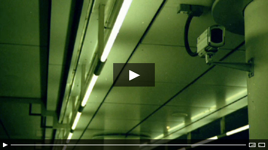

Copyright 2008 by Rasso Hilber - http://blog.nonverbla.de/blog

This VideoPlayer is optimized for easy implementation and personalization. It is possible to change:
without opening Flash. These properties are pasted into the SWF using FlashVars (See the source code of the »example.html«).
The following snippet is used to do this:
// Size and SWF
var player = new SWFObject("NonverBlaster.swf", "video", "740", "675", "9", "#000");
player.addParam("scale", "noscale");
//
// Important to use the FullScreen function
player.addParam("allowFullScreen", "true");
//
// source (FLV or h.264 MOV)
player.addVariable("videoURL", "http://yourdomain.com/yourmovie.flv");
//
// teaser image (best if same resolution as the video)
player.addVariable("teaserURL", "http://yourdomain.com/yourimage.jpg");
//
// other adjustable variables
player.addVariable("allowSmoothing", "true");
player.addVariable("autoPlay", "false");
player.addVariable("buffer", "6");
player.addVariable("showTimecode", "true");
player.addVariable("loop", "true");
player.addVariable("controlColour", "0xff8ec6");
player.addVariable("scaleIfFullScreen", "true");
player.addVariable("showScalingButton", "true");
player.write("videoPlayer");
To get the NonverBlaster running on your server, you will need:
If you want to edit the source of the SWF-File it would be good to know some german, since all commenting is done in this language which I know best ;) I will try to translate it sooner rather than later, promised! I recently translated all commenting to english. Now the german coders have a problem ;)
Have some fun and give me some props!
// Nonverbla